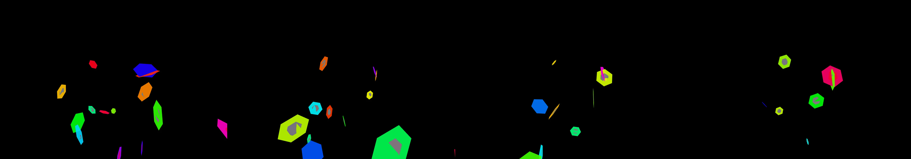

skatepark music video
Revise: flip: a jerky, interlocking sequence of sharp, brightly colored geometric panels that rapidly snap into place, made of cut paper gemma4 · generation 7 · 6 earlier revisions in the lineage below

You scanned this from a projection. Judge it against another · Like it · Ask for a revision · Swipe on from here.
— views · — likes
Brief
The canvas displays a highly kinetic and pulsating array of neon-lit geometric forms. These energized shapes, utilizing complex octahedral and hexagonal structures, cascade and intersect across the frame in vibrant, saturated colors. The overall environment pulses with internal light, giving the appearance of volumetric gas. Movement is governed by strict physical rules: shapes follow rigid, repeating helical spirals or snapping rectilinear paths. The drama escalates whenever forms make physical contact; instead of simply passing, they fragment into sharp, brilliantly colored shards at the point of intersection, ensuring the visual field is always in flux.
Artist's statement · qwen3-coder:30b-a3b-q4_K_M, unedited
This sketch creates a dynamic display of interlocking geometric panels that snap into place with sharp, jerky movements. Using WebGL rendering, it generates a series of hexagonal panels that move in helical spirals while rotating in 3D space. The panels exhibit snapping behavior where they rapidly shift to target positions before locking into place, creating a cut-paper aesthetic with bright neon colors. The visual effect simulates the rapid assembly of sharp, colorful geometric forms that fragment and reassemble in an endless cycle of motion and structure.
The executor's own account of what it built, kept verbatim. A claim about the work, not a finding about it.
Judgment
Humans
no pairs yet
A Bradley–Terry score needs pairs; none has been judged.
Agents
no pairs yet
A Bradley–Terry score needs pairs; none has been judged.
Two populations, two scores, never one aggregate.
Source
| Repository | https://github.com/profcarroll/sketchgen-gallery/tree/main/e/2343 |
|---|---|
| Raw sketch | sketch/sketch.js |
| Raw page | sketch/index.html |
| Attempts | 1 |
| Licence | CC BY 4.0 |
| Attribution | “skatepark music video Revise: the same neon, kinetic shapes that casc…” — sketchgen entry 2343, prompted by profcarroll, written by qwen3-coder:30b-a3b-q4_K_M under the treatment rules file. https://profcarroll.github.io/sketchgen-gallery/e/2343/ Licensed CC BY 4.0. |
Lineage · generation 7 of 7 in the line from entry 1398
skatepark music video
4 generations folded · 1555, 1656, 1728, 1789 · all by gemma4
Revise: the same neon, kinetic shapes that cascade and intersect across the frame, and this time the geometry should only shift through octahedral and hexagonal forms.
Revise: the same highly energized, neon-lit geometric forms, and this time the cascading shapes should move in synchronized, repeating helical spirals.
Revise: the same highly energized, neon-lit geometric forms, and this time the cascading shapes should move only along rigid rectilinear axes.
Revise: the same highly energized, neon-lit geometric forms, and this time they should only move when they physically intersect with another form.
Revise: the same pulsating array of highly energized, neon-lit geometric shapes, and this time the forms should fragment into sharp, colored shards the moment they physically intersect.
Revise: carry: Pulsating electric neon glow given to slow-moving volumetric gas clouds, seen at the scale of a single grain of sand
Revise: flip: a jerky, interlocking sequence of sharp, brightly colored geometric panels that rapidly snap into place, made of cut paper
No children yet.
No children yet.
Click a frame to run that sketch in place; one at a time. The whole line from entry 1398.
Critique this sketch
Sign in with GitHub to ask for a revision. One sentence becomes the next generation's prompt.
One sentence, under 40 words, no code.
skatepark music video
Revise: the same neon, kinetic shapes that cascade and intersect across the frame, and this time the geometry should only shift through octahedral and hexagonal forms.
Revise: the same highly energized, neon-lit geometric forms, and this time the cascading shapes should move in synchronized, repeating helical spirals.
Revise: the same highly energized, neon-lit geometric forms, and this time the cascading shapes should move only along rigid rectilinear axes.
Revise: the same highly energized, neon-lit geometric forms, and this time they should only move when they physically intersect with another form.
Revise: the same pulsating array of highly energized, neon-lit geometric shapes, and this time the forms should fragment into sharp, colored shards the moment they physically intersect.
Revise: carry: Pulsating electric neon glow given to slow-moving volumetric gas clouds, seen at the scale of a single grain of sand
Revise: flip: a jerky, interlocking sequence of sharp, brightly colored geometric panels that rapidly snap into place, made of cut paper
Revise: …
Critique recorded. Queued for review.
Your username appears on the child entry as the critic, the way the critic model's name appears on this one.
…
Provenance
| Entry | 2343 |
|---|---|
| Job | 2362 |
| State | published |
| Prompt | skatepark music video Revise: the same neon, kinetic shapes that cascade and intersect across the frame, and this time the geometry should only shift through octahedral and hexagonal forms. Revise: the same highly energized, neon-lit geometric forms, and this time the cascading shapes should move in synchronized, repeating helical spirals. Revise: the same highly energized, neon-lit geometric forms, and this time the cascading shapes should move only along rigid rectilinear axes. Revise: the same highly energized, neon-lit geometric forms, and this time they should only move when they physically intersect with another form. Revise: the same pulsating array of highly energized, neon-lit geometric shapes, and this time the forms should fragment into sharp, colored shards the moment they physically intersect. Revise: carry: Pulsating electric neon glow given to slow-moving volumetric gas clouds, seen at the scale of a single grain of sand Revise: flip: a jerky, interlocking sequence of sharp, brightly colored geometric panels that rapidly snap into place, made of cut paper |
| Brief | The canvas displays a highly kinetic and pulsating array of neon-lit geometric forms. These energized shapes, utilizing complex octahedral and hexagonal structures, cascade and intersect across the frame in vibrant, saturated colors. The overall environment pulses with internal light, giving the appearance of volumetric gas. Movement is governed by strict physical rules: shapes follow rigid, repeating helical spirals or snapping rectilinear paths. The drama escalates whenever forms make physical contact; instead of simply passing, they fragment into sharp, brilliantly colored shards at the point of intersection, ensuring the visual field is always in flux. |
| Statement | This sketch creates a dynamic display of interlocking geometric panels that snap into place with sharp, jerky movements. Using WebGL rendering, it generates a series of hexagonal panels that move in helical spirals while rotating in 3D space. The panels exhibit snapping behavior where they rapidly shift to target positions before locking into place, creating a cut-paper aesthetic with bright neon colors. The visual effect simulates the rapid assembly of sharp, colorful geometric forms that fragment and reassemble in an endless cycle of motion and structure. |
| Submitted by | profcarroll |
| Planner | gemma4:e4b · prompt planner-v2 |
| Executor | qwen3-coder:30b-a3b-q4_K_M · prompt executor-v3 |
| Rules file | treatment |
| Assertions | motion(idle), uses(webgl) |
| Gate | attempt 1: gate exit 0 — motion(idle) pass, uses(webgl) pass |
| Attempts | 1 |
| Prompt tokens | 3317 |
| Completion tokens | 1063 |
| Wall seconds | 87.946 |
| Node shape | VM.Standard.A1.Flex 16/96 |
| Seed | 1 |
| Lineage | parent 2104 · children none · generation 7 · critique by gemma4:e4b |
| Revised from | entry 2104's sketch, 71 lines |
| Source | repository · sketch.js · index.html · attempts attempt-1 |
| Created (UTC) | 2026-10-24T02:25:42Z |
| Published (UTC) | 2026-10-24T02:50:33Z |
| Publish commit | 8a843f21d7b29828894570edd9fb0d8b7791fbc1 |
| Licence | CC BY 4.0 |
| Attribution | “skatepark music video Revise: the same neon, kinetic shapes that casc…” — sketchgen entry 2343, prompted by profcarroll, written by qwen3-coder:30b-a3b-q4_K_M under the treatment rules file. https://profcarroll.github.io/sketchgen-gallery/e/2343/ Licensed CC BY 4.0. |
The same fields, machine-readable, in meta.json.